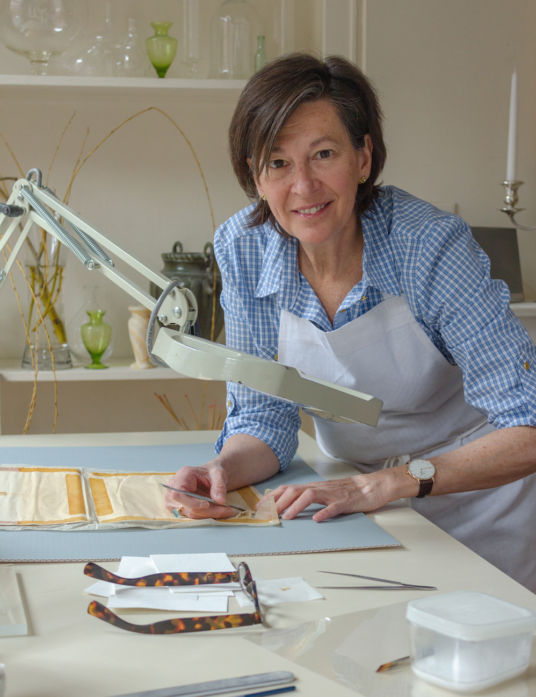

Experience
Louise Baptiste has 25 years of experience in the field of paper conservation. She currently holds a preservation/conservation position at Harvard University, Harvard Map Collection, where she has worked since 1995.
As proprietor of paperconserevator.com, she has worked for several museums and private collectors throughout the United States.
In addition, she has lectured for an MIT graduate course in the Department of Chemical Engineering on the removal of mold stains on works of art on paper, held conservator positions at the New England Historical Genealogical Society, Boston and Denis Gouey Studio, New York City, and conducted numerous private conservation workshops.
Additionally, she has been featured in Design New England magazine.
She spent six years as an apprentice at the town book bindery while obtaining her degrees from:
- Swain School of Design, New Bedford, MA (B.F.A)
- Washington University, St. Louis, MO (M.F.A)